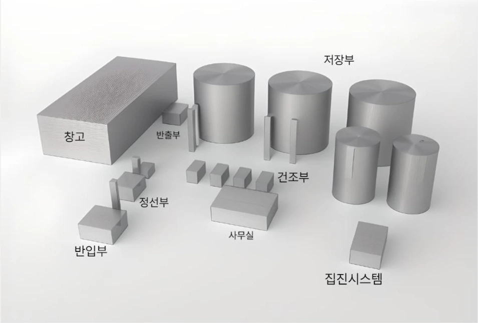
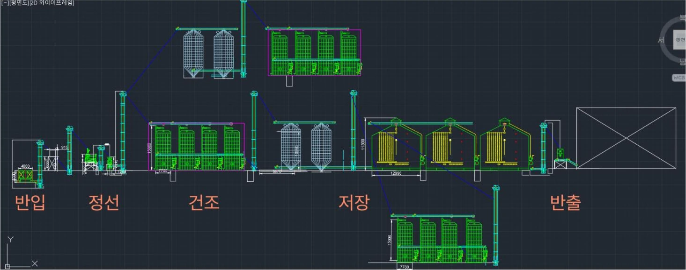
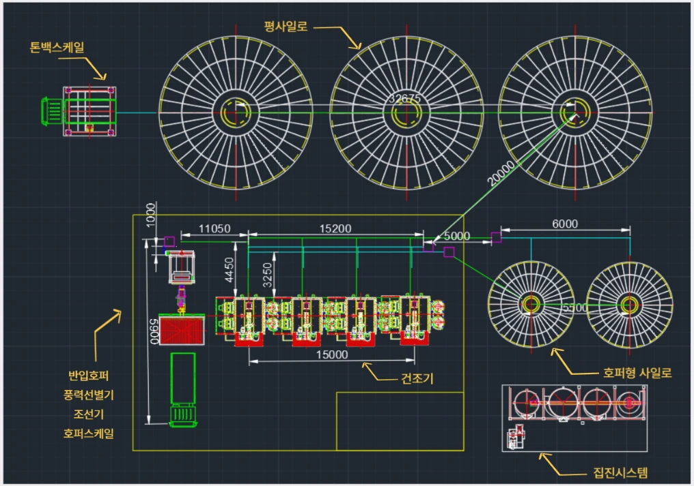

PROCESS DESIGN · DSC
벼 건조·저장시설
공정설계
180ha 경작지의 수확 물량을 처리하기 위한 반입·정선·건조·저장·반출 공정 설계
설계 조건과 설비 구성을 검토하고, 업체 문의와 감가상각비 계산을 담당했습니다.

설계 조건과 공정
수확 면적과 기간, 벼의 초기 함수율을 조건으로 설비와 시설 배치를 검토했습니다.
- 대상 면적
- 180 ha
- 수확 기간
- 15 일
- 초기 함수율
- 24 % w.b.
- 반입
- 정선
- 건조
- 저장
- 반출

수업에서 설정한 설계 조건이며, 실제 운영 실적이 아닙니다.
담당 역할
조건·설비 검토
부지와 설비 조건을 검토하고, 반입부터 저장·반출까지 이어지는 공정에서 필요한 설비 구성을 살펴봤습니다.
업체 문의
제한조건과 설계 시나리오를 업체에 직접 설명하고 추천 설비, 현업 사용 방식과 선택 시 고려할 사항을 질문했습니다. 답변은 팀 설비 검토의 참고자료로 활용했습니다.
감가상각비 계산
기계와 건물의 내용연수 및 잔존가치 가정을 구분해 연간 감가상각비를 계산했습니다.
설계에서 검토한 조건
전후 공정의 연결
조선기·건조기·사일로와 이송 설비를 개별 장비로만 보지 않고, 벼의 이동 순서와 시설 배치 안에서 검토했습니다.
자료와 현업 정보
제한조건에 맞는 설비 구성을 설명하며 업체에 문의해, 자료만으로 판단하기 어려운 사용 방식과 고려사항을 보완했습니다.
설비·건축 비용
설비와 건물의 취득가액뿐 아니라 사용 기간에 따른 비용도 검토했습니다. 감가상각비는 프로젝트에서 설정한 가정에 따라 계산했습니다.
감가상각비 계산 가정과 배치도
- 기계
- 내용연수 8년
- 건물
- 내용연수 20년
- 잔존가치
- 취득가액의 5%
연간 감가상각비 = (취득가액 − 잔존가치) ÷ 내용연수

결과와 배운 점
팀은 공정 배치와 설비·건축 비용을 포함한 설계 시나리오를 발표자료로 정리했습니다. 저는 조건 검토, 업체 문의와 비용 계산을 통해 설비 선택에 필요한 정보를 보완했습니다.
개별 설비의 사양뿐 아니라 앞뒤 공정과 배치 조건을 함께 검토하고, 불확실한 사용 조건을 관계자에게 설명하며 확인하는 경험을 쌓았습니다.
교육용 설계 프로젝트로, 실제 시설 시공이나 운영 성능 검증은 수행하지 않았습니다.